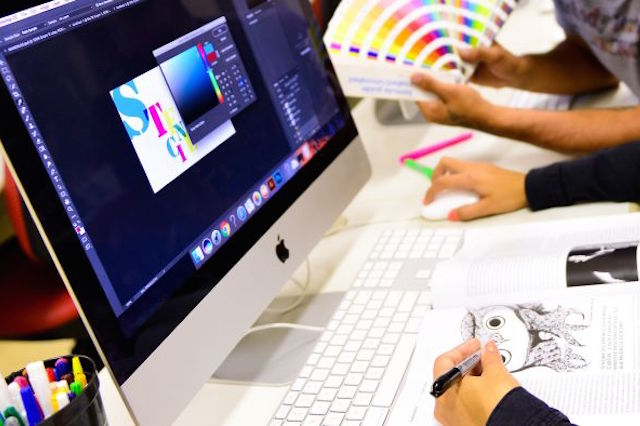

profissional que usa a criatividade e a técnica para desenvolver interfaces digitais interativas, atrativas e eficazes. Essa especialização da área de design visual é necessária para atender as necessidades geradas pelo surgimento (e rápida evolução) da mídia digital. O profissional dessa área concilia os conhecimentos da programação visual - criatividade, senso estético, embasamento visual cultural, estudo da forma voltados aos variados tipos de suporte da mídia digital - com a técnica destinada ao uso das ferramentas adequadas do meio de produção digital para criar soluções para mídia digital e interativa.
